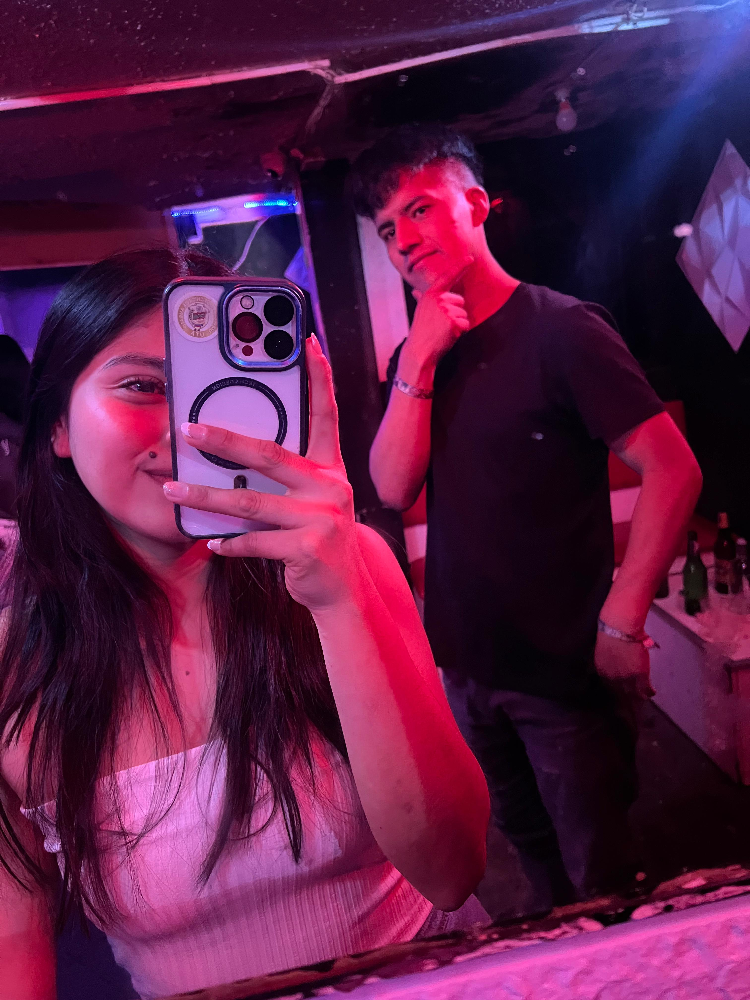

Hola...
No sé si esta carta llegue a ti, o si algún día la leas. Tal vez sea solo una forma de cerrar un ciclo, o quizás una puerta que se vuelve a abrir. No lo sé. Lo único que tengo claro, es que necesitaba escribirte.
Nos conocimos cuando más lo necesitaba, sin esperarlo. No eras solo una compañera de trabajo. Te volviste mi amiga, mi confidente, mi alegría en los días largos. Reíamos, compartíamos, y cada salida era un respiro para el alma. Nunca planeé sentir lo que sentí, simplemente sucedió. A veces, lo más hermoso llega sin avisar.
Sé que en tu corazón había alguien más. Lo entendí, aunque doliera. Pero aún así, nos dimos ese primer beso… y aunque fue solo un momento, para mí fue suficiente para entender que te había llegado a querer, de verdad. No sabíamos si funcionaría, pero ambos sabíamos que algo especial estaba pasando.
Tuve que dejar el trabajo, la universidad me llamaba. Pero aun así no me alejé. Te buscaba, te escribía, te llevaba detallitos… porque me importabas. Porque me importas. Pero un día, sin explicación, me bloqueaste de todo aunque creo fue mi culpa lo busque yo mismo. Pero sabes me dolió. A veces quisiera preguntártelo directamente, pero prefiero que, si algún día quieres explicarlo, lo hagas tú, a tu tiempo pero creo fue mi culpa siempre de haber perdido la amistadad y todo lo que construiamos.
No te escribo para reprochar. Al contrario, te escribo porque valoro lo que fuiste para mí. Y aunque ahora ya no estemos en contacto, quiero que sepas que si alguna vez necesitas algo, estaré ahí. La amistad verdadera no desaparece con un bloqueo. Permanece, aunque sea en silencio.
Cuídate. Mucho. Eres joven, tienes metas, sueños, una vida hermosa por delante. Rodéate de personas que te sumen, no que te confundan. No busques amor en lugares donde solo hay vacío. No te entregues a quien no sabe valorarte, aunque sientas que lo amas. El amor no debería doler, ni confundirte. Si un día dudas, escucha a tu amiga, esa con la que vives, ella quiere lo mejor para ti.
Yo… solo quiero que seas feliz. Que crezcas, que cumplas todo lo que te propones. Me siento orgulloso de ti, aunque ya no estés a mi lado. Ojalá algún día podamos reencontrarnos, aunque sea como los amigos que alguna vez fuimos. Porque para mí, significaste mucho. Y eso no se borra.
Gracias por los recuerdos, por tu sonrisa, por tu cariño… aunque haya sido breve, fue real.
Con cariñoDavid Cundulli
✨ Pero Te Guste ✨
Te conocí poco tiempo Jennifer,
pero fue suficiente para que marcaras algo en mí.
Ahora seguimos caminos distintos,
y está bien…
pero no podía irme sin haberte hecho esto.
💕

✨ Creo eso es todo jaja ✨
Nada mas Jennifer, creo esto es lo último que verás sobre mí. ¡Sé feliz, cuídate,
pórtate bien y no olvides que te quiero un chingo!
Abre este enlace de TikTok: TikTok Video TikTok Video TikTok Video
Te cuidas, mi amiga, mi pana, mi todo, de toda la vida 💕